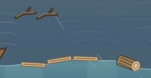
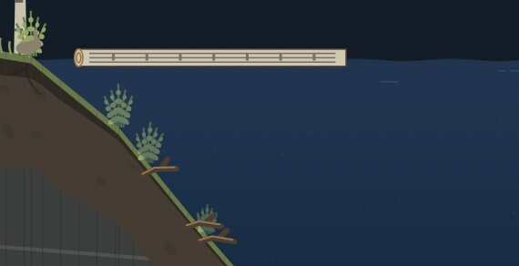
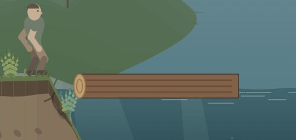

Small discoveries, strange failures, and repairs from the world of Archē.
· v0.12.65 retrospective
A tree is never just a tree
A fallen tree can now be a bridge, a canoe, or a rather questionable place to stand in the middle of a lake. Meanwhile, beneath the mountains, there are stones to gather. The world is acquiring possibilities without acquiring a list of things to do.
There remains the small philosophical problem of making sure that two people standing on the same floating trunk are, in fact, standing on the same floating trunk. Even reality takes some programming.
· v0.12.72
Where the lake forgot to catch them

Two twigs briefly took up residence in the sky.
Two branches hung over the waves. The saved positions said they had already come to rest, and there was nothing beneath them but air.
Loose branches, planks and logs now use the same rule. When released they fall until ground or water catches them. Old saves with unsupported wood settle where it belongs too.
· v0.12.67
A canoe with its own schedule
The paddler had somewhere to be. His canoe would be along shortly.
From the bank, I watched a paddler sail out of his own canoe. He was still sitting down. The canoe, a few strokes behind, looked unbothered.
The paddler’s movements reached other players faster than the canoe’s saved position. Now their screens move the hull and rider together with each update. In v0.12.68 the paddle comes along too, stroke for stroke.
· v0.12.66
A lake full of paperweights

The birch held still. The twigs took the stairs.
The twigs settled down the submerged bank. The trunk stayed on top, so still you could have drawn a straight line with it.
Loose branches now rise to the surface. Floating trunks bob and roll gently, even on a lake, and the surface you walk on moves with the wood.
· v0.12.65
The lake got ahead of itself
Two logs, one unsolicited swan dive.
I jumped from one trunk to the next. Halfway across, my character stretched out like a swimmer, although the second log was right under his feet.
The dive animation was watching the water. Now it checks the jump’s path for a trunk first. If your feet will reach wood, you stay ready to land. If you miss, the lake still gets its dive.
· v0.12.63
The log that let me through

It looked like a bridge. The lake had other ideas.
I jumped for the floating trunk. The trunk stayed exactly where it was. I went straight through it and into the lake.
Only the water had a say in where you landed. Now the top of a large floating trunk catches your feet. You can walk along it or jump off again, and it dips and bobs under your weight.
· v0.12.60
The tree that tried to drown
The trunk, halfway through a career change.
The tree fell into a pool and lay diagonally under the water, as if it had one last hill to lie on. From the bank, Archē offered a perfectly reasonable suggestion: Work on canoe.
The trunk had kept its instructions for lying on a slope. Now, if there’s room to clear the bank, it rises to the waterline. Canoe work can wait until the wood is back on dry ground.